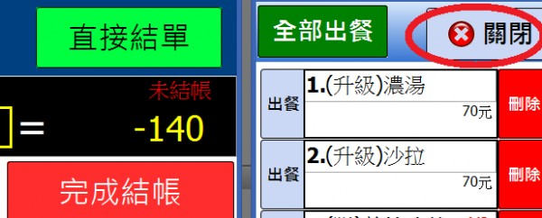
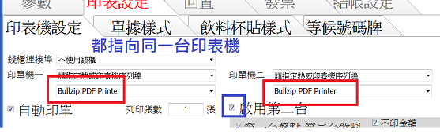

使用流暢問題
10 個回答
您好
1.流暢性卡住類似當機問題
您好
主要是出完菜單後的再次點選菜單跳出結帳畫面後按關閉會沒反應關不掉。另外是否能有預約時間功能？跟同機分單功能呢？
您好
請問您指的"關閉" 是這個按鈕嗎

是每次按,每次都會沒反應關不掉
還是有時會有時不會?
是每次按,每次都會沒反應關不掉
還是有時會有時不會?
偶爾會
1.預約時間功能是指客人
預約店內桌位嗎?
方便告知您想管理甚麼資訊?
比如客人五點打來七點才要出菜
2.跟同機分單功能
是指只有一台印單機
卻要區分餐點和飲料嗎?
同一台印單機
另外可以建立客戶資料嗎？
還是有時會有時不會?
偶爾會
1.預約時間功能是指客人
預約店內桌位嗎?
方便告知您想管理甚麼資訊?
比如客人五點打來七點才要出菜
2.跟同機分單功能
是指只有一台印單機
卻要區分餐點和飲料嗎?
同一台印單機
另外可以建立客戶資料嗎？
1.當機問題
提供資訊實在太少 無從判斷原因
可以的話 能否提供當機畫面(拍照)?
建議您先開機按F9 還原電腦系統 看看當機情形有無改善
這是 ET2400 的還原說明
http://www.manualslib.com/manual/370529/Asus-Et2400e.html?page=35
注意: 還原過程會清空電腦所有資料 還原前請先備份
如還是出現當機問題 請再跟站長連絡
2.列印分單問題 將第二台印表機設定和第一台相同 即可分印單據

3.目前並無計畫添加客戶管理 預約管理功能
請您見諒
是否可以加價提供我講的額外功能呢？
我發現卡住問題是只要點後面一點的單就會有機會不能關閉或點單開不起來,但是點回前面單結單完就不會不能點或卡住了,我不知道別人有沒有碰到這問題,我想大家都不可能乖乖的先點先結單吧！！！如果這個問題是沒辦法解決的那我很難去花錢購買,尤其在忙亂時期後面的客人要先結單就會卡住的話是會很混亂的,可以說是嚴重bug,完全不是硬體的問題
您好
站長無法重現你所說的情況 也許是硬體周邊或其他程式干擾
1.如果沒有錢櫃 錢櫃設定請設"不使用錢櫃"
2.關閉或移除其他非windows內建的常駐程式
針對這個問題 如果一直無法解決
可否留下您的連絡電話及方便連絡時間?
站長想與您的電腦做連線(Teamviewer) 了解問題所在
http://www.teamviewer.com/zhtw/download/windows.aspx
請下載teamviewer 來信告知連線帳號密碼
站長 Email
advposys@gmail.com
----------------------------------------------
站長對每個bug都採取審慎的態度去處理
各位使用者如有上述類似問題 請留言給站長知道
您好